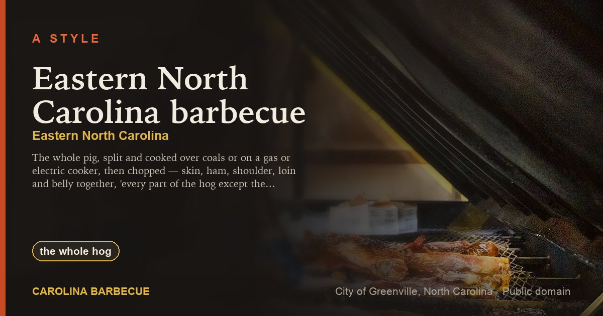
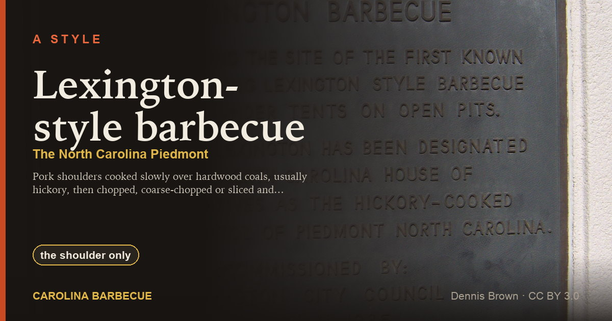
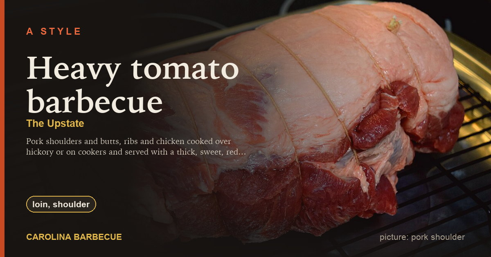
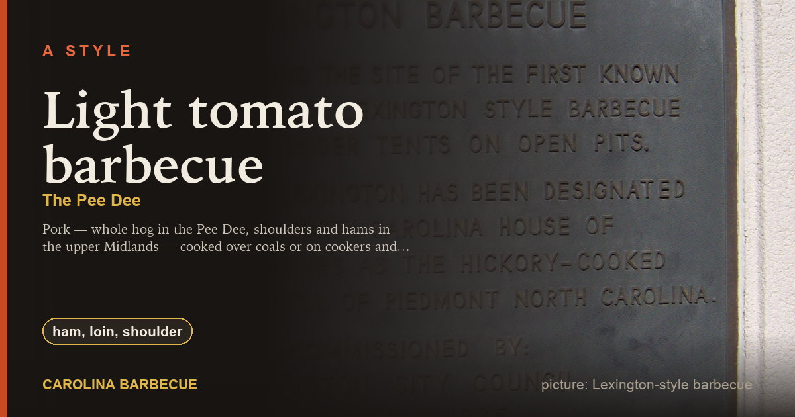
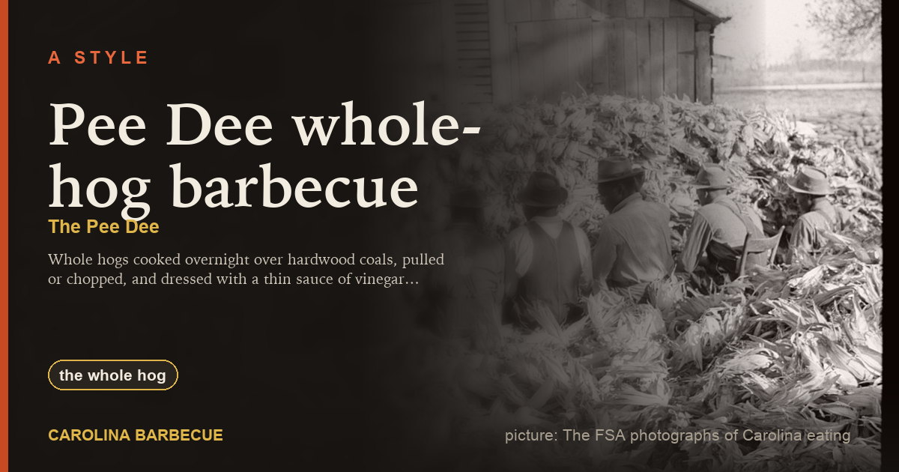
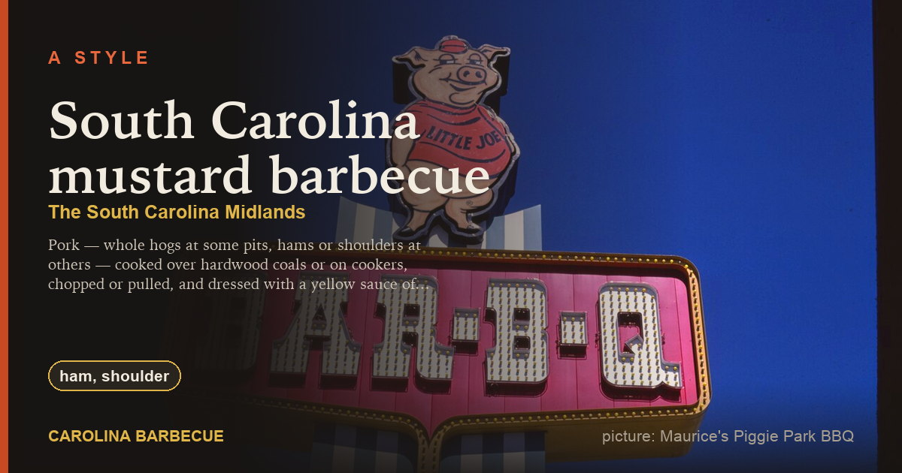

Carolina BarbecueStyles (6)
The regional traditions: what is cooked, over what, with which sauce.
North Carolina (2)

Eastern North Carolina barbecueEastern-style, Down East barbecue, whole-hog barbecue
The whole pig, split and cooked over coals or on a gas or electric cooker, then chopped — skin, ham, shoulder, loin and belly together, 'every part of the hog except the squeal' — and dressed after cooking with a thin…

Lexington-style barbecueLexington barbecue, Piedmont-style barbecue, Western-style barbecue
Pork shoulders cooked slowly over hardwood coals, usually hickory, then chopped, coarse-chopped or sliced and dressed with a thin red sauce the Piedmont calls dip: vinegar, ketchup or tomato, water, salt, pepper and red…
South Carolina (4)

Heavy tomato barbecueheavy-tomato style, tomato-and-sugar barbecue, Upstate barbecue
Pork shoulders and butts, ribs and chicken cooked over hickory or on cookers and served with a thick, sweet, red sauce of tomato, brown sugar or molasses, vinegar and spices — the sauce the state tourism office says you…

Light tomato barbecuelight-tomato style, vinegar-and-ketchup barbecue, upper Midlands barbecue
Pork — whole hog in the Pee Dee, shoulders and hams in the upper Midlands — cooked over coals or on cookers and served with a thin sauce that is the Carolinas' vinegar-and-pepper with ketchup stirred in.

Pee Dee whole-hog barbecuePee Dee barbecue, vinegar-and-pepper barbecue, Williamsburg County barbecue
Whole hogs cooked overnight over hardwood coals, pulled or chopped, and dressed with a thin sauce of vinegar, salt, black pepper and red pepper — the same sauce as eastern North Carolina's across the state line.

South Carolina mustard barbecueMidlands barbecue, mustard-based barbecue, Carolina Gold barbecue
Pork — whole hogs at some pits, hams or shoulders at others — cooked over hardwood coals or on cookers, chopped or pulled, and dressed with a yellow sauce of prepared mustard, vinegar, sugar and spices.